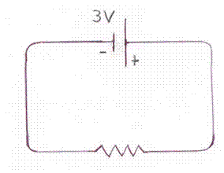
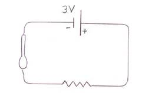
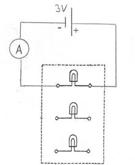
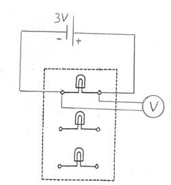
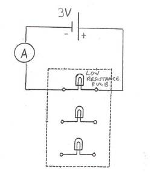
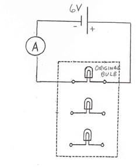
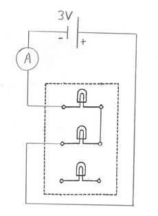

Objective
- Build simple, series, and parallel circuits using bulbs, batteries, wires, and meters.
- Observe how current, voltage, resistance, and brightness change across different setups.
- Test qualitative and quantitative predictions from Ohm's law.
How to use this data sheet
Work through the circuit activities in order. Before turning on the switch, predict what should happen. Then record observations, meter readings, and short explanations directly in the spaces provided.
- Assemble each circuit exactly as shown in the referenced figure.
- Get instructor approval when requested before energizing the circuit.
- Record values to the specified precision and include units when appropriate.
- Use Ohm's law and
P = IVwhen the worksheet asks for calculations.
Part A: A simple circuit
- Set up the circuit shown in Figure 11-A using the 3V battery, one bulb, and two wires. Draw current and electron-flow directions on your printed figure or notes.
Observation with switch on:
Observation with bulb loosened:
Why? - Add the metal spoon as shown in Figure 11-B, then test the plastic spoon.
Metal spoon observation:
Metal spoon classification:
Plastic spoon observation:
Plastic spoon classification: - Insert the ammeter in two locations and compare current readings.
Current reading 1:
Current reading 2:
Same current within experimental error? - Measure the voltage across the bulb and the battery, then calculate resistance and power.
Voltage across bulb:
Voltage across battery:
Resistance setup: Answer:
Power setup: Answer:




Part B: The effect of voltage and resistance on current

- Replace the regular bulb with a lower-resistance bulb and predict how current and brightness will change.
Predicted current change:
Predicted brightness:
Measured current: Brightness result:
Consistent with Ohm's law? - Increase the source voltage from 3V to 6V while keeping the original bulb and record the resulting changes.
Predicted current:
Predicted brightness:
Measured current:
Brightness comparison:
Measured bulb voltage:
Resistance setup: Answer:
Same resistance as before?
Ohmic or non-ohmic?
Power setup: Answer:

Part C: Series circuit investigation
Reminder: Switch the voltage back to 3V before continuing.

- Connect two bulbs in series and record predictions and results.
Instructor approval initials:
Equal brightness?
Brighter or dimmer than one-bulb case?
What does brightness indicate about current?
Series current value:
Less current than Part A.3? - Connect three bulbs in series and compare with the two-bulb setup.
Predict equal brightness?
Predicted relative brightness:
Observed result:
What does this indicate about current?
Current with three bulbs:
Less than the two-bulb current?
What happens if one bulb is loosened, and why?
Wrap-up questions
- What evidence from the lab supports charge flow through a complete circuit only?
- Where did current stay the same, and where did voltage change?
- Which observations suggested that the bulb behaved as a non-ohmic device?